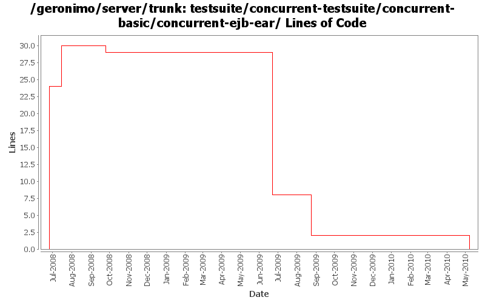

[root]/testsuite/concurrent-testsuite/concurrent-basic/concurrent-ejb-ear
 src
(0 files, 0 lines)
src
(0 files, 0 lines)
 main
(0 files, 0 lines)
main
(0 files, 0 lines)
 filtered-resources
(0 files, 0 lines)
filtered-resources
(0 files, 0 lines)
 META-INF
(0 files, 0 lines)
META-INF
(0 files, 0 lines)
 resources
(0 files, 0 lines)
resources
(0 files, 0 lines)

| Author | Changes | Lines of Code | Lines per Change |
|---|---|---|---|
| Totals | 7 (100.0%) | 33 (100.0%) | 4.7 |
| gawor | 2 (28.6%) | 24 (72.7%) | 12.0 |
| rickmcguire | 2 (28.6%) | 6 (18.2%) | 3.0 |
| djencks | 2 (28.6%) | 3 (9.1%) | 1.5 |
| jbohn | 1 (14.3%) | 0 (0.0%) | 0.0 |
The java ee concurrent JSR appears dead, and this code has some serious problems
within an OSGi environment. Removing this from the base Geronimo server because
of these issues. If the concurrent support ever becomes real, hopefully the split
package problems will be fixed in the final spec.
0 lines of code changed in 1 file:
Upgrade to ee6 specs for servlet, ejb. Upgrade to jetty 8. Use jpa 1.0 spec labelled 1.0. Don't try to include openwebbeans until it has available snapshots
2 lines of code changed in 1 file:
GERONIMO-4655 upgrade version to 3.0-SNAPSHOT, make a few things more consistent
1 lines of code changed in 1 file:
remove references to testsuite-maven-plugin as it's not really used and working right
0 lines of code changed in 1 file:
remove a few recently included relativePath entries that should not be needed in the pom parent references
0 lines of code changed in 1 file:
Fix build break cause by openejb updates
6 lines of code changed in 1 file:
restructure the concurrency testsuite
24 lines of code changed in 1 file: